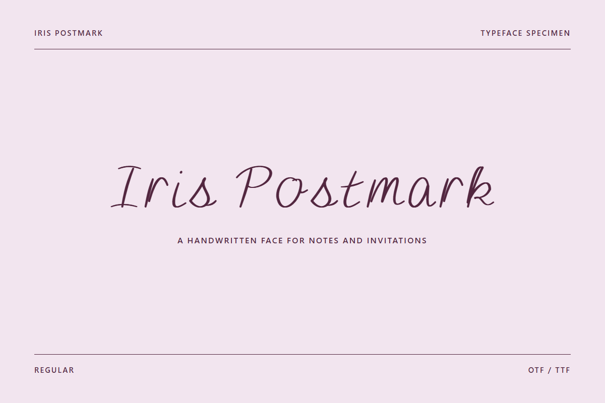
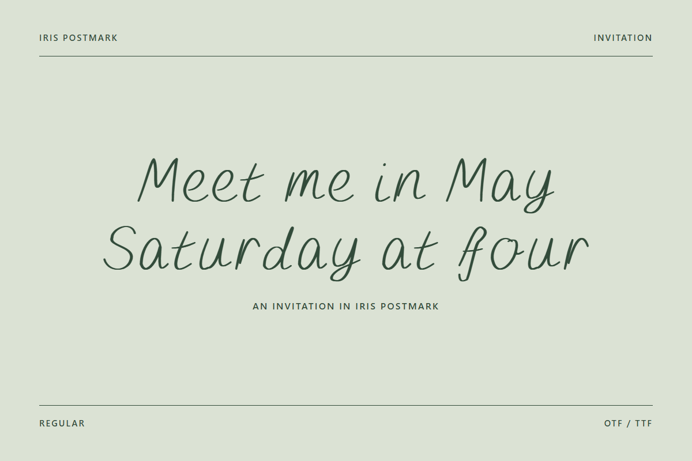
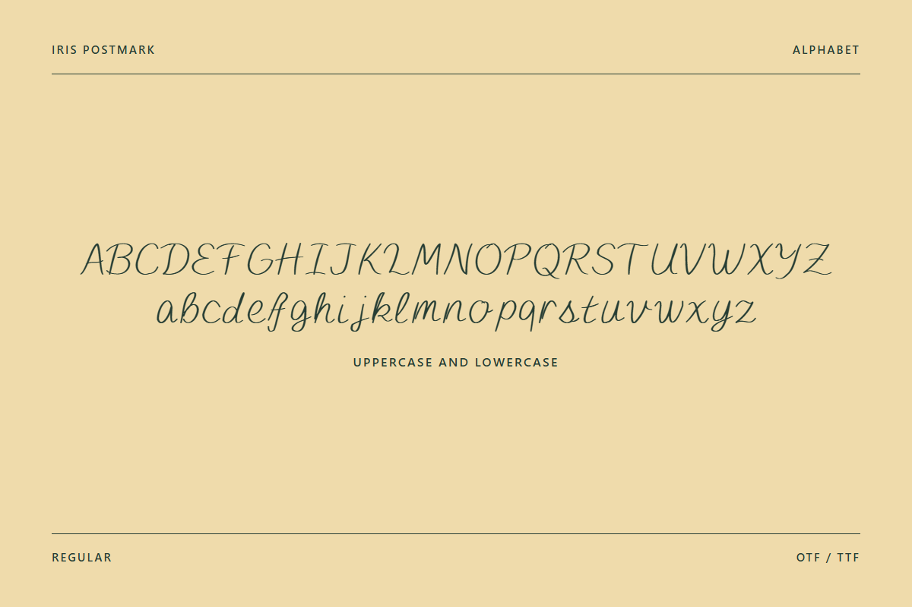
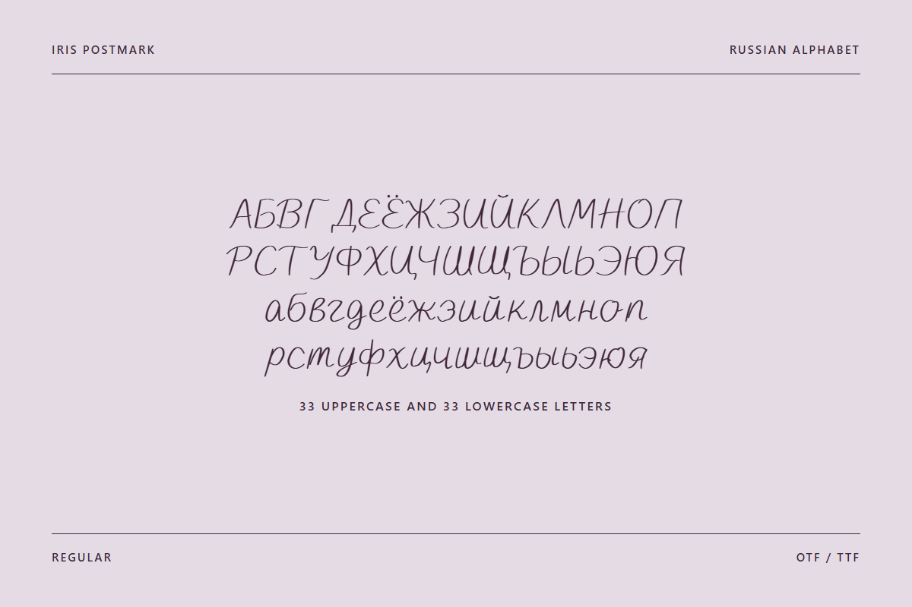
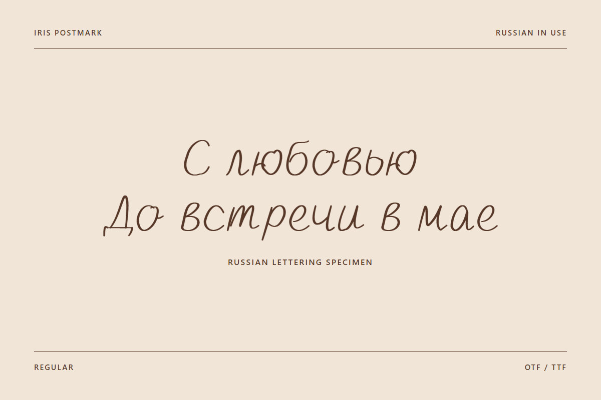
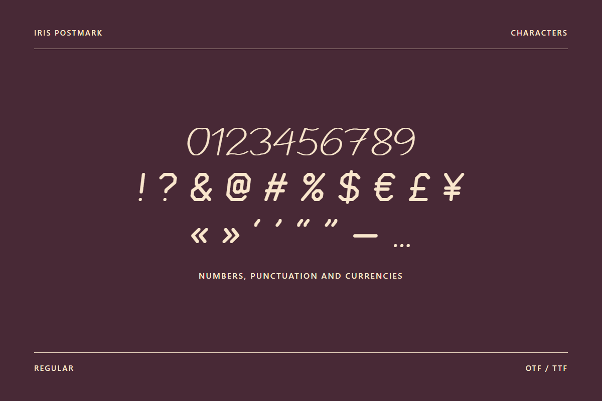
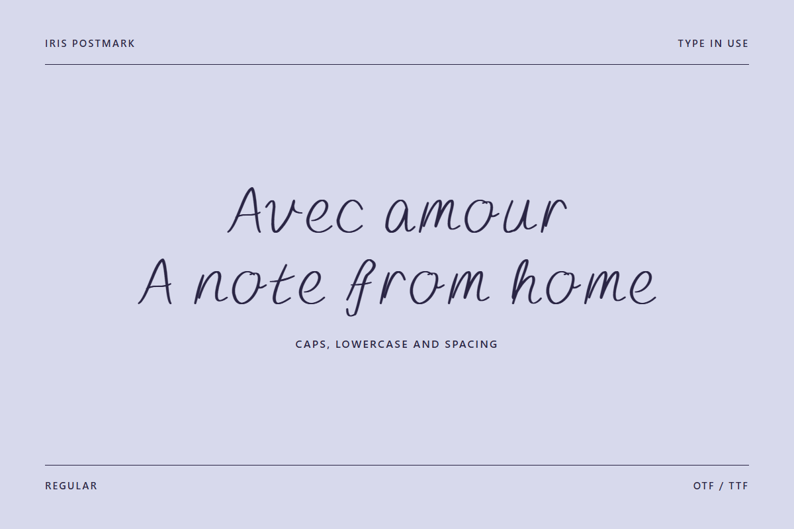
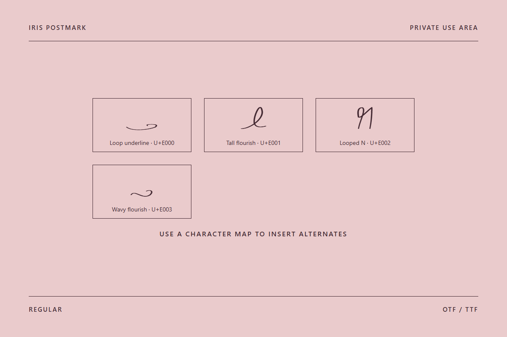

← All typefacesType specimen
Iris Postmark
A handwritten display face for postcards, personal notes and invitations. Fine strokes and looped descenders give it the rhythm of pen on paper.








